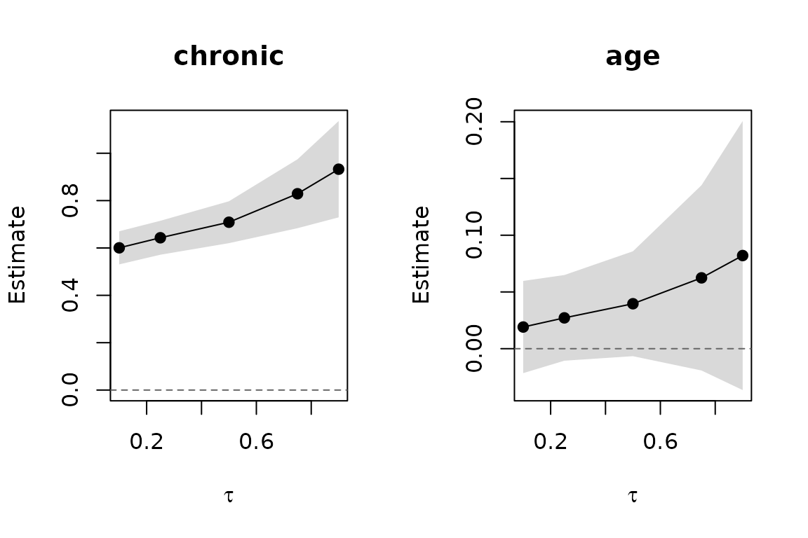

Heterogeneity: random slopes, latent classes and quantiles
Source:vignettes/panglm-heterogeneity.Rmd
panglm-heterogeneity.RmdA single coefficient describes the average effect. Health data are often more heterogeneous: patients decline at different rates, a small group of heavy users drives most of the costs, and a treatment can shift the upper tail of a cost distribution more than its centre. This vignette covers three ways to model this heterogeneity:
| Heterogeneity | Example | Tool |
|---|---|---|
| Continuous, in the effect of a variable | each patient has their own rate of lung function decline | random slopes, panglm(random = ~ time)
|
| Discrete, in the whole response | low users and high users of care | latent classes, panfmm()
|
| Across the outcome distribution | effect of chronic disease on high costs | quantile regression, panqr()
|
The examples use small simulated panels and few quadrature nodes, EM starts and bootstrap replicates so that the vignette builds quickly; the companion book uses larger settings.
Random slopes
A random-intercept model lets patients differ in their level only. A random-slope model also lets them differ in the effect of a regressor, usually time: , with bivariate normal with an unstructured covariance (Laird and Ware 1982). We simulate lung function (FEV1) of 100 patients over 6 years, declining by 50 mL a year on average, 30 mL faster in smokers, with a patient-specific rate of decline (SD 40 mL a year).
set.seed(3)
N <- 100; TT <- 6
f <- data.frame(id = rep(seq_len(N), each = TT), year = rep(0:(TT - 1), N))
f$smoker <- rep(rbinom(N, 1, 0.4), each = TT)
b0 <- rnorm(N, sd = 0.4)
b1 <- rnorm(N, sd = 0.04)
f$fev1 <- 3 + b0[f$id] + (-0.05 - 0.03 * f$smoker + b1[f$id]) * f$year -
0.2 * f$smoker + rnorm(N * TT, sd = 0.1)
f$exac <- rpois(N * TT, exp(-0.3 + 0.3 * f$smoker +
(0.05 + 3 * b1[f$id]) * f$year + b0[f$id]))random = ~ year adds a random slope of year
to the random intercept. The Gaussian model is fitted by exact maximum
likelihood.
rs <- panglm(fev1 ~ year * smoker, data = f, index = c("id", "year"),
model = "random", random = ~ year)
summary(rs)
#>
#> Call:
#> panglm(formula = fev1 ~ year * smoker, data = f, index = c("id",
#> "year"), model = "random", random = ~year)
#>
#> Family: gaussian Link: identity Model: random Effect: individual
#> N = 600 groups = 100 vcov: classical
#>
#> Coefficients:
#> Estimate Std. Error z value Pr(>|z|)
#> (Intercept) 3.018041 0.048290 62.498 < 2e-16 ***
#> year -0.047189 0.006031 -7.824 5.11e-15 ***
#> smoker -0.289954 0.079388 -3.652 0.00026 ***
#> year:smoker -0.017134 0.009915 -1.728 0.08398 .
#> ---
#> Signif. codes: 0 '***' 0.001 '**' 0.01 '*' 0.05 '.' 0.1 ' ' 1
#>
#> Log-likelihood: 241.2
#> Dispersion parameter: 0.009865
#> Random effects (SD): (Intercept) 0.37649, year 0.04157
#> Random-effects correlation: year ~ (Intercept) -0.1251
#> Residual df: 596 Iterations: 16
head(rs$ranef, 3)
#> (Intercept) year
#> 1 0.24559340 -0.02712743
#> 2 -0.32250423 0.10527653
#> 3 0.05620227 0.01557888The average decline is 47 mL a year, 17 mL faster in smokers. The SD
of the patient-specific slopes, 42 mL a year, is as large as the average
decline itself: some patients barely decline, others lose about 130 mL a
year. rs$varcomp holds the covariance matrix of the random
effects and rs$ranef the predicted effects of each patient
(BLUPs).
A likelihood ratio test against the random-intercept model rejects clearly. With a variance on the boundary of its space under the null, the p-value is conservative (Self and Liang 1987).
ri <- panglm(fev1 ~ year * smoker, data = f, index = c("id", "year"),
model = "random")
lr <- 2 * (as.numeric(logLik(rs)) - as.numeric(logLik(ri)))
c(LR = lr, p = pchisq(lr, df = 2, lower.tail = FALSE))
#> LR p
#> 1.005478e+02 1.466671e-22Random slopes are also available for Poisson, negative binomial,
gamma and binomial models. Their likelihood is integrated by adaptive
Gauss-Hermite quadrature with R nodes per random effect
(R = 1 is the Laplace approximation of
lme4::glmer()). Use at least 5 nodes and check that the
estimates are stable when R is increased.
rp <- panglm(exac ~ year + smoker, data = f, index = c("id", "year"),
model = "random", family = "poisson", random = ~ year, R = 5)
summary(rp)
#>
#> Call:
#> panglm(formula = exac ~ year + smoker, data = f, index = c("id",
#> "year"), model = "random", family = "poisson", random = ~year,
#> R = 5)
#>
#> Family: poisson Link: log Model: random Effect: individual
#> N = 600 groups = 100 vcov: classical
#>
#> Coefficients:
#> Estimate Std. Error z value Pr(>|z|)
#> (Intercept) -0.28984 0.10183 -2.846 0.00442 **
#> year 0.09120 0.02916 3.128 0.00176 **
#> smoker 0.21778 0.12547 1.736 0.08261 .
#> ---
#> Signif. codes: 0 '***' 0.001 '**' 0.01 '*' 0.05 '.' 0.1 ' ' 1
#>
#> Log-likelihood: -856.4
#> Dispersion parameter: 1
#> Random effects (SD): (Intercept) 0.2760, year 0.1248
#> Random-effects correlation: year ~ (Intercept) 0.3433
#> Residual df: 594 Iterations: 41The exacerbation rate rises by about 10% a year on average; the slope SD of 0.12 means that for some patients it falls and for others it rises by more than 30% a year.
Latent classes
Finite mixture models assume that each individual belongs to one of
latent classes for all of their observations, with class-specific
coefficients (Deb and Trivedi 1997, 2002). In health care use the
classes typically separate a large group of low users from a small group
of high users who respond differently to illness or insurance.
concomitant lets the class probabilities depend on
individual-level variables through a multinomial logit.
We simulate 300 patients, 30% of them high users with a stronger effect of a chronic condition. High users are more frequent among patients with low income.
set.seed(1)
N <- 300; TT <- 4
m <- data.frame(id = rep(seq_len(N), each = TT), year = rep(seq_len(TT), N))
income <- rnorm(N)
high <- rbinom(N, 1, plogis(-1 - 0.8 * income))
m$income <- income[m$id]
m$chronic <- rbinom(N * TT, 1, 0.4)
m$age <- rep(round(runif(N, 40, 80)), each = TT)
m$visits <- rpois(N * TT, exp(ifelse(high[m$id] == 1,
1.5 + 0.6 * m$chronic,
0 + 0.3 * m$chronic) +
0.01 * (m$age - 60)))The number of classes is chosen first, usually by BIC (Deb and
Trivedi 2002 prefer it). Mixture likelihoods have local maxima, so the
EM algorithm is run from several starts (nstart). The
comparison below uses a single start and the final model three, to keep
the example fast; in practice use 10 or more. EM converges slowly when a
model has more classes than the data support; a looser tolerance
(tol = 1e-4) is enough to compare the fits and leaves this
table unchanged.
panfmmselect(visits ~ chronic + age, data = m, index = c("id", "year"),
k = 1:3, nstart = 1, seed = 1, tol = 1e-4)
#> k logLik df AIC BIC smallest
#> 1 1 -3092.569 3 6191.139 6206.409 1.00000000
#> 2 2 -2172.237 7 4358.473 4394.104 0.30556874
#> 3 3 -2169.745 11 4361.491 4417.482 0.05230694BIC picks two classes; the third class of the three-class model holds only 5% of the patients. The final model adds income as a concomitant variable.
fmm <- panfmm(visits ~ chronic + age, data = m, index = c("id", "year"),
k = 2, family = "poisson", concomitant = ~ income,
nstart = 3, seed = 1)
summary(fmm)
#>
#> Call:
#> panfmm(formula = visits ~ chronic + age, data = m, index = c("id",
#> "year"), k = 2, family = "poisson", concomitant = ~income,
#> nstart = 3, seed = 1)
#>
#> Model: 2-class latent class Poisson model
#> N = 1200 groups = 300 vcov: classical
#>
#> Class 1 (prior 0.693, 208 individuals by modal posterior, mean outcome 1.099):
#> Estimate Std. Error z value Pr(>|z|)
#> (Intercept) -0.710704 0.178885 -3.973 7.10e-05 ***
#> chronic 0.305699 0.066657 4.586 4.52e-06 ***
#> age 0.011210 0.002867 3.910 9.23e-05 ***
#> ---
#> Signif. codes: 0 '***' 0.001 '**' 0.01 '*' 0.05 '.' 0.1 ' ' 1
#>
#> Class 2 (prior 0.307, 92 individuals by modal posterior, mean outcome 6.157):
#> Estimate Std. Error z value Pr(>|z|)
#> (Intercept) 1.157313 0.117105 9.883 < 2e-16 ***
#> chronic 0.645424 0.042551 15.168 < 2e-16 ***
#> age 0.005998 0.001835 3.269 0.00108 **
#> ---
#> Signif. codes: 0 '***' 0.001 '**' 0.01 '*' 0.05 '.' 0.1 ' ' 1
#>
#> Class probabilities (multinomial logit, class 1 = reference):
#> Estimate Std. Error z value Pr(>|z|)
#> prior2:(Intercept) -0.8860 0.1356 -6.533 6.45e-11 ***
#> prior2:income -0.7693 0.1534 -5.015 5.31e-07 ***
#> ---
#> Signif. codes: 0 '***' 0.001 '**' 0.01 '*' 0.05 '.' 0.1 ' ' 1
#>
#> logLik = -2157.561 df = 8 AIC = 4331.123 BIC = 4371.843The model finds a class of about 70% low users and a class of high
users with more than five times as many visits and a larger effect of
chronic illness (a rate ratio of
against
;
true values 1.8 and 1.35). Higher income lowers the probability of being
a high user (true coefficient -0.8). With classes this well separated,
every patient is assigned to their true class.
predict(type = "posterior") gives each patient’s posterior
class probabilities; type = "class" assigns each to the
class with the largest posterior probability, and
type = "components" gives the class-specific means.
first <- !duplicated(m$id)
post <- predict(fmm, type = "posterior")[first, ]
assigned <- predict(fmm, type = "class")[first]
all(assigned == max.col(post))
#> [1] TRUE
table(true = high, assigned = assigned)
#> assigned
#> true 1 2
#> 0 208 0
#> 1 0 92Latent classes are a modelling device, not a discovery of real groups: a two-class mixture also fits a continuous but skewed heterogeneity. Interpret the classes with care and check that the conclusions hold with classes.
Quantile regression
Mean regression can hide what happens in the tails. Quantile
regression estimates the effect of a regressor on each quantile
of the outcome distribution (Koenker and Bassett 1978). With panel data
the individual effects have to be removed, which is harder than for the
mean because quantiles do not commute with differencing.
panqr() offers the two-step estimator of Canay (2011),
which subtracts individual effects estimated at the mean, and the method
of moments quantile regression (MM-QR) of Machado and Santos Silva
(2019), which assumes a location-scale model and is the estimator of
Stata’s xtqreg. Both assume that the individual effects
shift the whole distribution (a location shift).
We simulate annual costs whose spread grows with the number of chronic conditions, so that the effect of chronic conditions is larger in the upper tail.
set.seed(1)
N <- 200; TT <- 5
q <- data.frame(id = rep(seq_len(N), each = TT), year = rep(seq_len(TT), N))
alpha <- rep(rnorm(N), each = TT)
q$chronic <- rpois(N * TT, 1 + 0.5 * (alpha > 0))
q$age <- rep(sample(40:70, N, TRUE), each = TT) + q$year
q$cost <- 2 + alpha + 0.5 * q$chronic + 0.02 * q$age +
(1 + 0.3 * q$chronic) * rexp(N * TT)
qr <- panqr(cost ~ chronic + age, data = q, index = c("id", "year"),
tau = c(0.1, 0.25, 0.5, 0.75, 0.9), model = "mmqr")
#> Warning: 0.1% of the fitted values of the scale function are not positive
summary(qr)
#>
#> Call:
#> panqr(formula = cost ~ chronic + age, data = q, index = c("id",
#> "year"), tau = c(0.1, 0.25, 0.5, 0.75, 0.9), model = "mmqr")
#>
#> Estimator: MM-QR fixed-effects quantile regression (Machado and Santos Silva 2019)
#> N = 1000 groups = 200 vcov: analytic (cluster by individual, G = 200)
#>
#> Location (within regression, cluster-robust):
#> Estimate Std. Error z value Pr(>|z|)
#> chronic 0.73788 0.05105 14.453 <2e-16 ***
#> age 0.04514 0.02717 1.661 0.0967 .
#> ---
#> Signif. codes: 0 '***' 0.001 '**' 0.01 '*' 0.05 '.' 0.1 ' ' 1
#>
#> Scale (within regression, cluster-robust):
#> Estimate Std. Error z value Pr(>|z|)
#> chronic 0.10446 0.03198 3.266 0.00109 **
#> age 0.01982 0.02047 0.968 0.33287
#> ---
#> Signif. codes: 0 '***' 0.001 '**' 0.01 '*' 0.05 '.' 0.1 ' ' 1
#>
#> Quantile tau = 0.1 (q(tau) = -1.315):
#> Estimate Std. Error z value Pr(>|z|)
#> chronic 0.60055 0.03567 16.836 <2e-16 ***
#> age 0.01909 0.02073 0.921 0.357
#> ---
#> Signif. codes: 0 '***' 0.001 '**' 0.01 '*' 0.05 '.' 0.1 ' ' 1
#>
#> Quantile tau = 0.25 (q(tau) = -0.9075):
#> Estimate Std. Error z value Pr(>|z|)
#> chronic 0.64308 0.03655 17.59 <2e-16 ***
#> age 0.02716 0.01926 1.41 0.159
#> ---
#> Signif. codes: 0 '***' 0.001 '**' 0.01 '*' 0.05 '.' 0.1 ' ' 1
#>
#> Quantile tau = 0.5 (q(tau) = -0.279):
#> Estimate Std. Error z value Pr(>|z|)
#> chronic 0.70873 0.04510 15.71 <2e-16 ***
#> age 0.03961 0.02358 1.68 0.0929 .
#> ---
#> Signif. codes: 0 '***' 0.001 '**' 0.01 '*' 0.05 '.' 0.1 ' ' 1
#>
#> Quantile tau = 0.75 (q(tau) = 0.8721):
#> Estimate Std. Error z value Pr(>|z|)
#> chronic 0.82898 0.07422 11.169 <2e-16 ***
#> age 0.06242 0.04165 1.499 0.134
#> ---
#> Signif. codes: 0 '***' 0.001 '**' 0.01 '*' 0.05 '.' 0.1 ' ' 1
#>
#> Quantile tau = 0.9 (q(tau) = 1.864):
#> Estimate Std. Error z value Pr(>|z|)
#> chronic 0.93261 0.10374 8.990 <2e-16 ***
#> age 0.08208 0.06048 1.357 0.175
#> ---
#> Signif. codes: 0 '***' 0.001 '**' 0.01 '*' 0.05 '.' 0.1 ' ' 1
plot(qr)
Each additional chronic condition raises the median cost by about 0.7 and the 90th percentile by about 0.9 (true values 0.71 and 1.19): the effect grows across the distribution, as the significant scale coefficient indicates. The age effect is small and imprecise at every quantile. The MM-QR standard errors are clustered by individual, so they allow the costs of a patient to be correlated across years. The warning flags the few observations at which the fitted scale is not positive, where the location-scale model is strained. The Canay estimator uses a cluster bootstrap for its standard errors (50 replicates here, use 500 or more); a pooled quantile regression that ignores the individual effects is biased when, as here, they are correlated with the regressors (0.85 and 1.23 below).
cn <- panqr(cost ~ chronic + age, data = q, index = c("id", "year"),
tau = c(0.5, 0.9), model = "canay", boot = 50, seed = 1)
coef(cn)
#> tau=0.5 tau=0.9
#> (Intercept) 1.55685776 3.14542139
#> chronic 0.64773941 0.94330602
#> age 0.04472028 0.03895032
coef(panqr(cost ~ chronic + age, data = q, index = c("id", "year"),
tau = c(0.5, 0.9), model = "pooling"))
#> tau=0.5 tau=0.9
#> (Intercept) 3.700606276 5.375277300
#> chronic 0.853254880 1.226367729
#> age 0.003935281 0.007903501References
Canay, I. A. (2011). A simple approach to quantile regression for panel data. The Econometrics Journal, 14, 368-386.
Deb, P., and Trivedi, P. K. (1997). Demand for medical care by the elderly: a finite mixture approach. Journal of Applied Econometrics, 12, 313-336.
Deb, P., and Trivedi, P. K. (2002). The structure of demand for health care: latent class versus two-part models. Journal of Health Economics, 21, 601-625.
Koenker, R., and Bassett, G. (1978). Regression quantiles. Econometrica, 46, 33-50.
Laird, N. M., and Ware, J. H. (1982). Random-effects models for longitudinal data. Biometrics, 38, 963-974.
Machado, J. A. F., and Santos Silva, J. M. C. (2019). Quantiles via moments. Journal of Econometrics, 213, 145-173.
Self, S. G., and Liang, K.-Y. (1987). Asymptotic properties of maximum likelihood estimators and likelihood ratio tests under nonstandard conditions. Journal of the American Statistical Association, 82, 605-610.